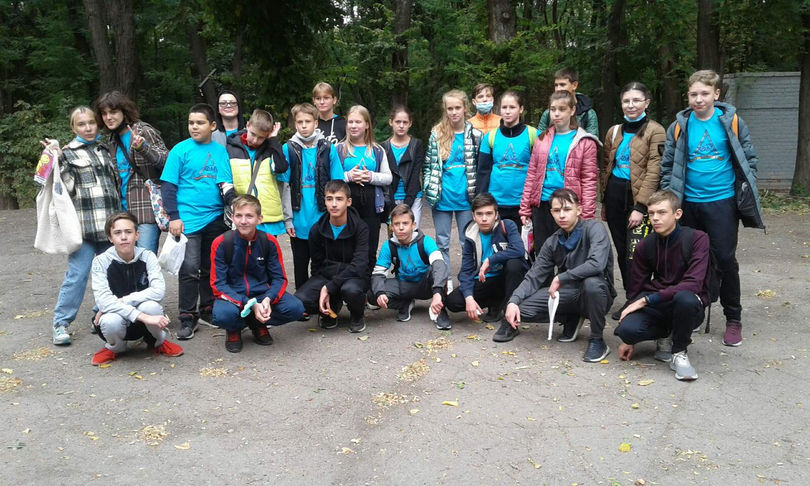
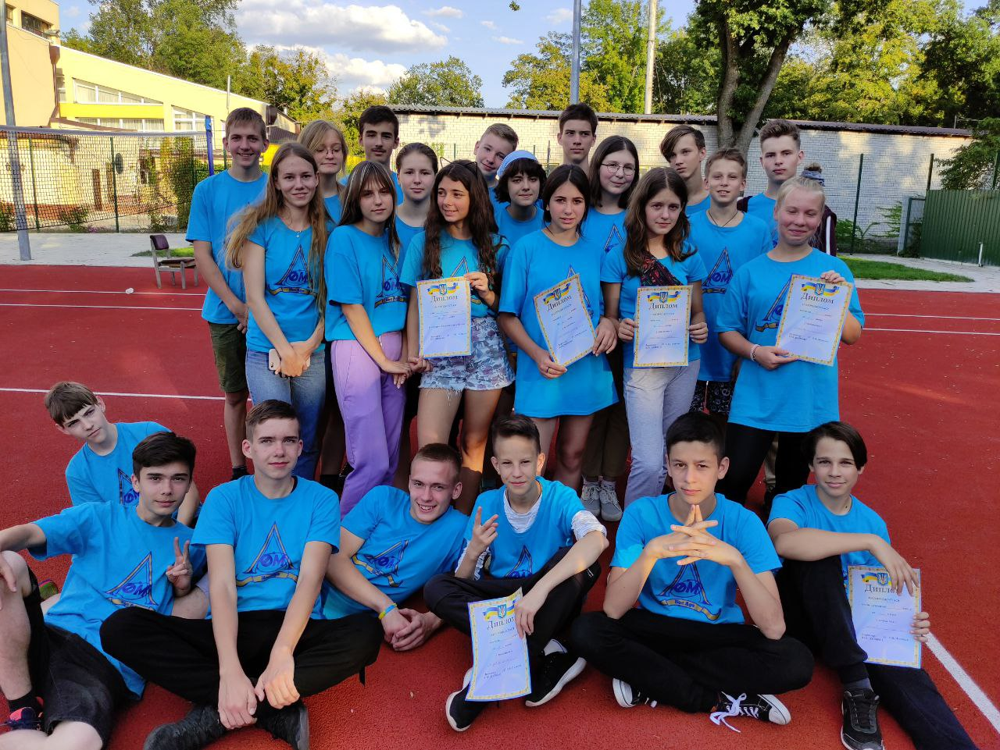
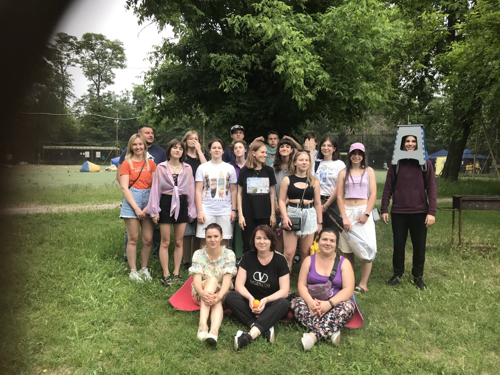
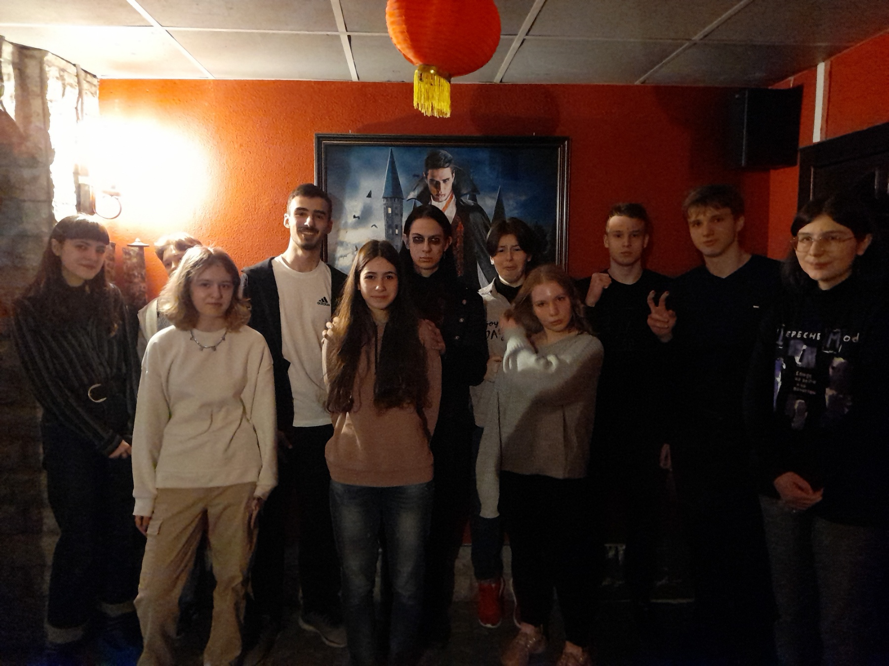

Вітаю на моїй головній сторінці!
Чесно кажучи я не пам'ятаю, де це ми, але мені сподобалася ця фотографія

Це я в 9 класі на МАТ регаті, тут було дуже весело і круто

Це ми вже після закінчення 10 класу вирішили поїхати у парк посмажити шашлик

На цій фотографії ми з класом проходили квест кімнату, мені дуже сподобалося
